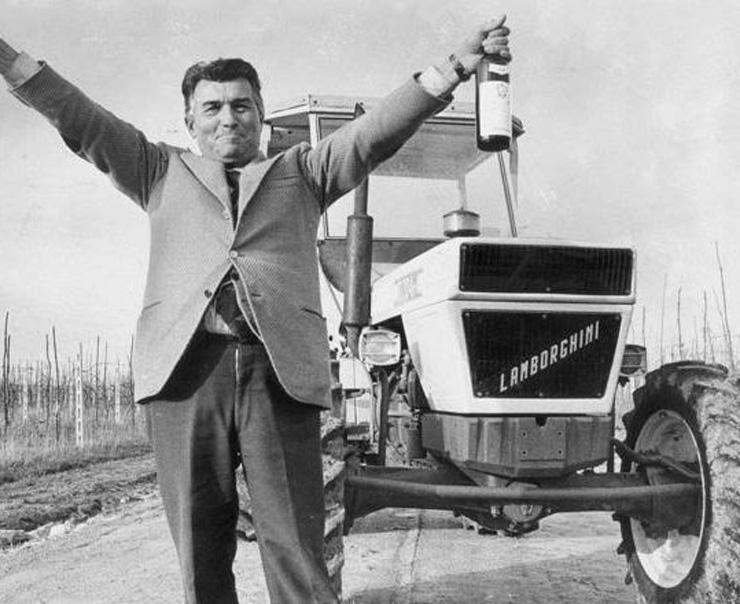
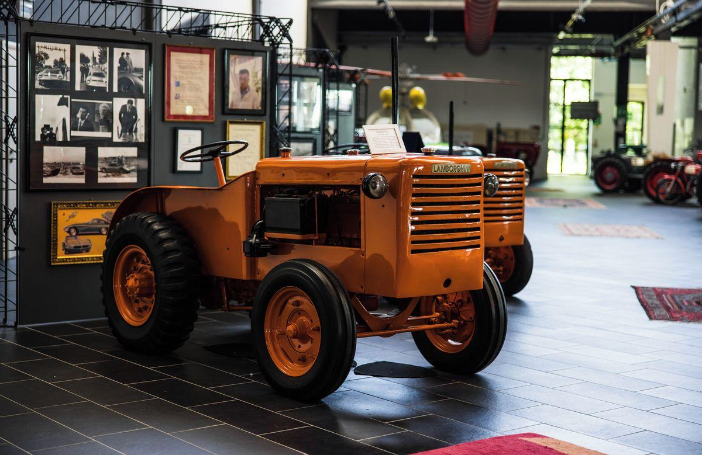
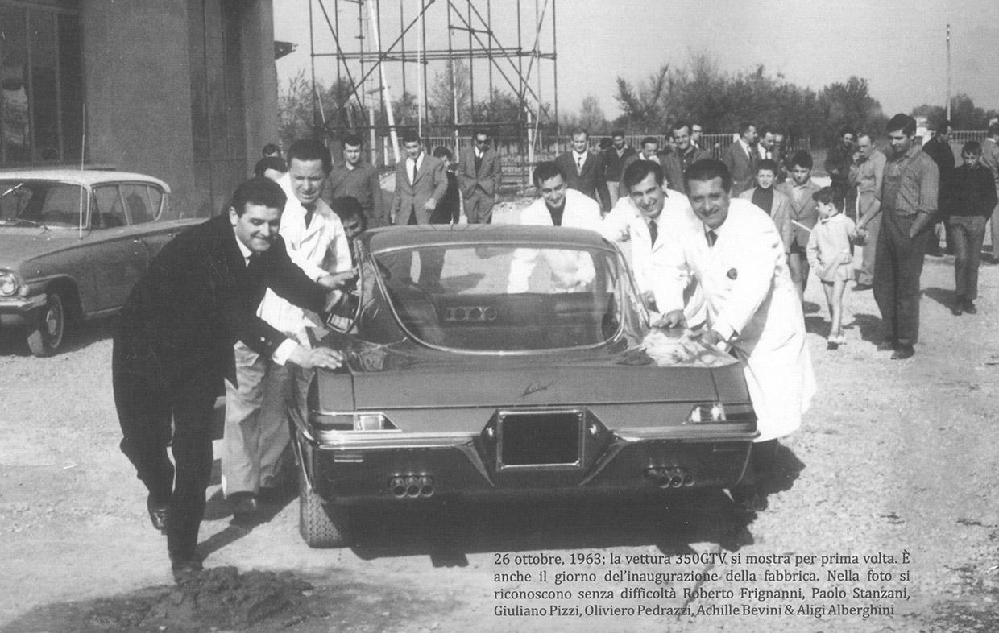
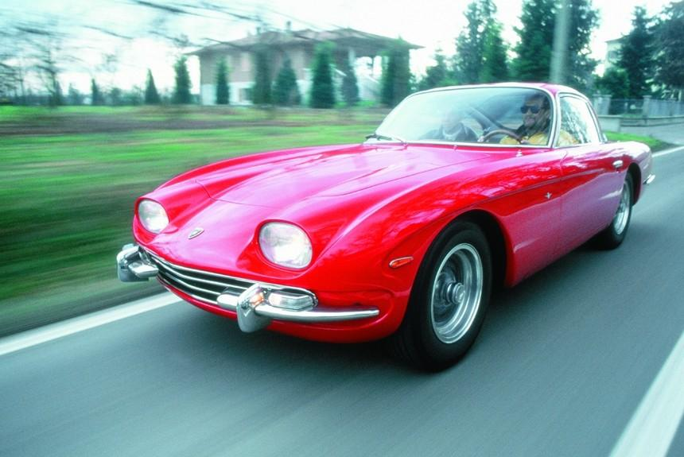
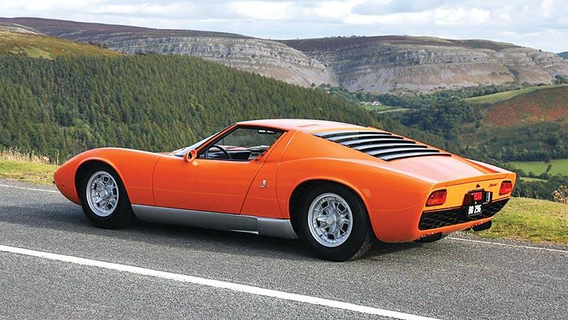
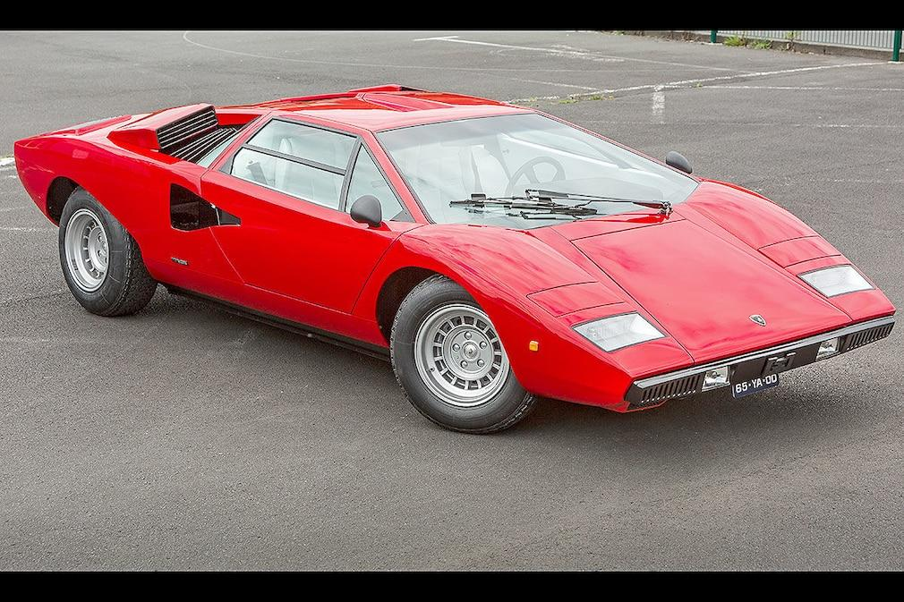
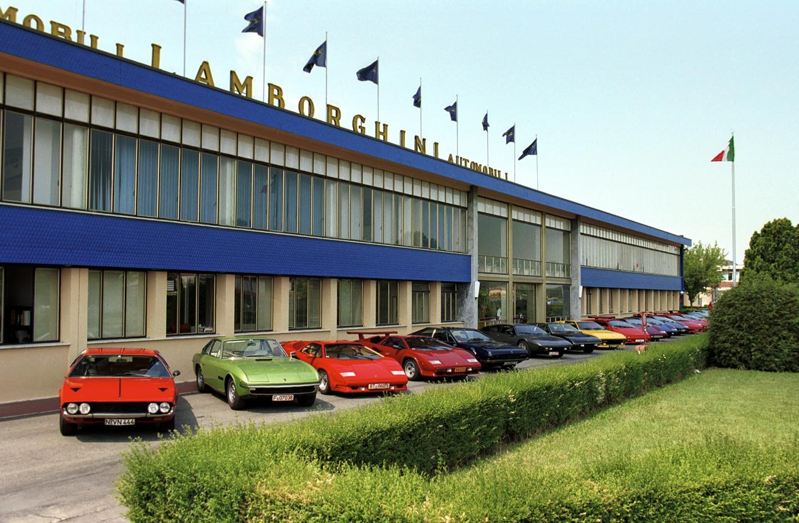
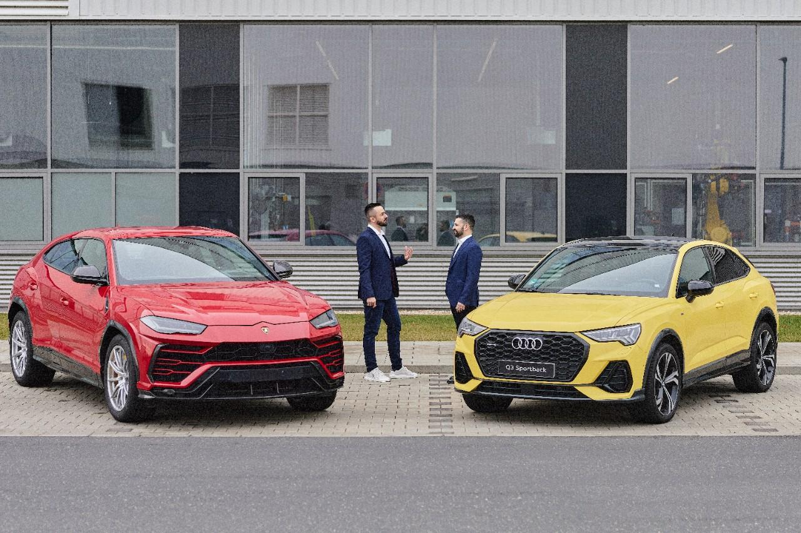
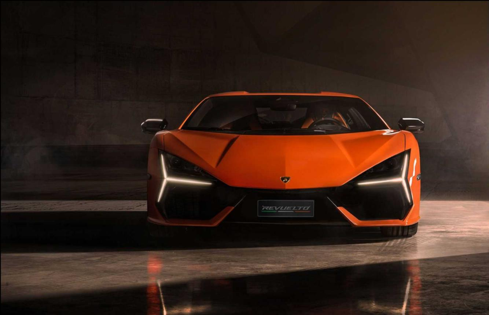
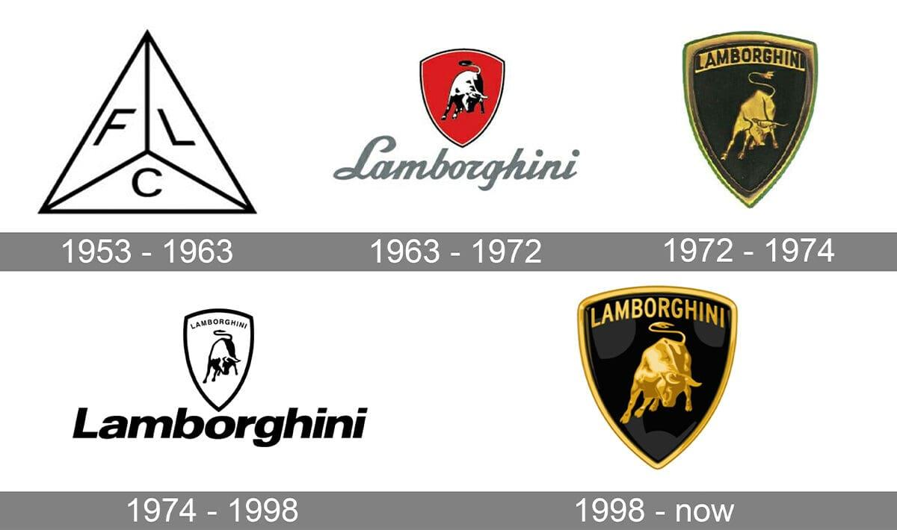

Ferruccio Lamborghini naît le 28 avril 1916 à Renazzo, en Italie. Passionné par la mécanique, il travaille sur des moteurs pendant la Seconde Guerre mondiale. Après le conflit, il transforme des véhicules militaires en tracteurs, très demandés par les agriculteurs italiens.

En 1948, Ferruccio crée Lamborghini Trattori, une entreprise spécialisée dans les tracteurs. Grâce à son succès, il devient très riche. Il possède plusieurs voitures de luxe, notamment des Ferrari, mais il n'est pas satisfait de leur fiabilité.

En 1963, après un désaccord avec Enzo Ferrari, Ferruccio décide de créer sa propre marque automobile : Automobili Lamborghini, installée à Sant'Agata Bolognese. Son objectif est de fabriquer des voitures plus confortables, plus rapides et plus fiables que les Ferrari.

La première voiture de la marque est la 350 GT, présentée en 1964. Elle est suivie de la 400 GT, qui améliore les performances et le confort. Lamborghini commence alors à se faire un nom parmi les constructeurs de voitures de sport.

En 1966, Lamborghini présente la Miura, considérée comme la première supercar moderne. Son moteur V12 est placé derrière les sièges, une innovation qui influence de nombreux constructeurs. La Miura devient rapidement une légende.

Au début des années 1970, la crise pétrolière fait chuter les ventes de voitures de sport. Ferruccio Lamborghini vend progressivement son entreprise. Malgré ces difficultés, Lamborghini lance en 1974 la spectaculaire Countach, célèbre pour son design futuriste et ses portes en élytre.

Dans les années 1980 et 1990, Lamborghini change plusieurs fois de propriétaire. En 1990, la Diablo devient la nouvelle voiture phare de la marque. Elle dépasse les 320 km/h, ce qui en fait l'une des voitures les plus rapides du monde.

En 1998, Lamborghini est rachetée par Audi, filiale du Volkswagen Group. Grâce à cet investissement, la qualité, la fiabilité et la technologie des voitures progressent fortement.

Au XXIᵉ siècle, Lamborghini lance plusieurs modèles emblématiques :
En 2018, le SUV Urus rencontre un immense succès et devient le modèle le plus vendu de la marque. Depuis 2023, la Revuelto remplace l'Aventador et devient la première Lamborghini hybride rechargeable équipée d'un moteur V12. En 2024, la Temerario succède à la Huracán avec une motorisation hybride V8.

